RC 柱強度 少一條方程式
開場
RC 柱的題型看起來很多：平衡點、給偏心距、畫互制圖、還有細長柱。但整個單元其實只有一台計算引擎，差別只在中性軸深度 \(c\) 從哪裡來。我們先搞懂，柱的答案為什麼是一條曲線。
① 少一條方程式
先把梁和柱放在一起。兩者用同一套斷面假設：平面保持平面，混凝土極限應變 0.003。
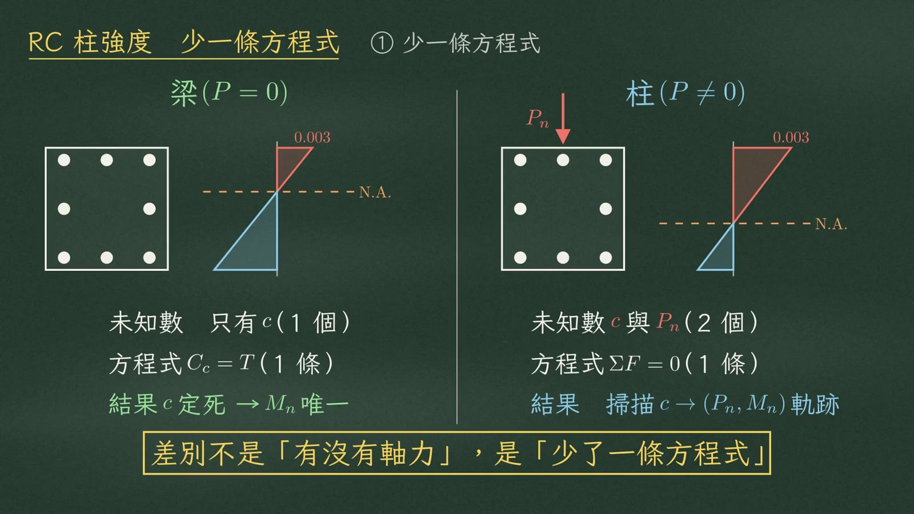
| 梁（\(P=0\)） | 柱（\(P\neq0\)） | |
|---|---|---|
| 未知數 | 只有 \(c\)（1 個） | \(c\) 與 \(P_n\)（2 個） |
| 方程式 | \(C_c=T\)（1 條） | \(\Sigma F=0\)（1 條） |
| 結果 | \(c\) 定死 → \(M_n\) 唯一的數字 | 掃描 \(c\) → \((P_n,M_n)\) 一整條軌跡 |
梁沒有軸力，未知數只有中性軸深度 \(c\) 一個，力平衡 \(C_c=T\) 一條式子，\(c\) 就被定死，\(M_n\) 是唯一的數字。柱多了軸力 \(P_n\)，未知數變成 \(c\) 和 \(P_n\) 兩個，方程式卻還是只有軸力平衡一條。未知數比方程式多一個，所以答案不是一個點，而是一整條軌跡。
② 掃描 c
少一條方程式怎麼辦？就自己指定 \(c\)。所有的應變直線，都繞著頂端 \(\varepsilon_{cu}=0.003\) 這一點轉。\(c\) 越深，直線越陡，斷面受壓的比例就越高。這個動作，就叫做掃描 \(c\)。
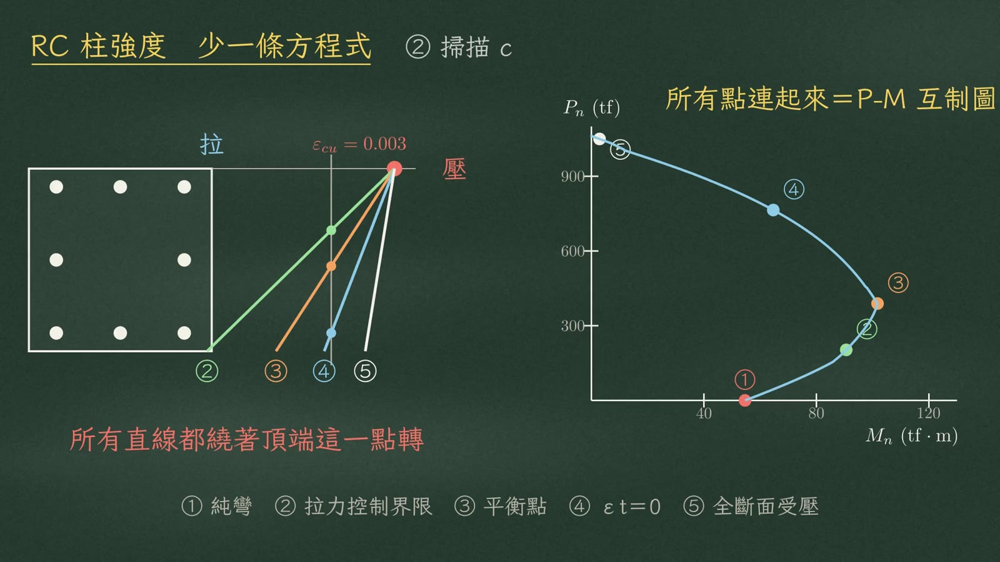
每一條直線，算出一組 \(P_n\) 和 \(M_n\)，就是圖上的一個點。從純彎、拉力控制界限、平衡點，一路到拉力筋應變為零、全斷面受壓。把所有點連起來，就是 P-M 互制圖。
圖中編號：① 純彎 ② 拉力控制界限 ③ 平衡點 ④ \(\varepsilon_t=0\) ⑤ 全斷面受壓
③ 唯一計算引擎
用一根示範柱來跑這台引擎。斷面 60×60 cm，8-#9 鋼筋，分上中下三排，深度 6、30、54 cm。\(f'_c=280\)，\(f_y=4200\)（\(\beta_1=0.85\)，\(A_{st}=51.76\ \text{cm}^2\)）。先給一個 \(c\)，這裡取平衡點，\(c=c_b=32.02\ \text{cm}\)。
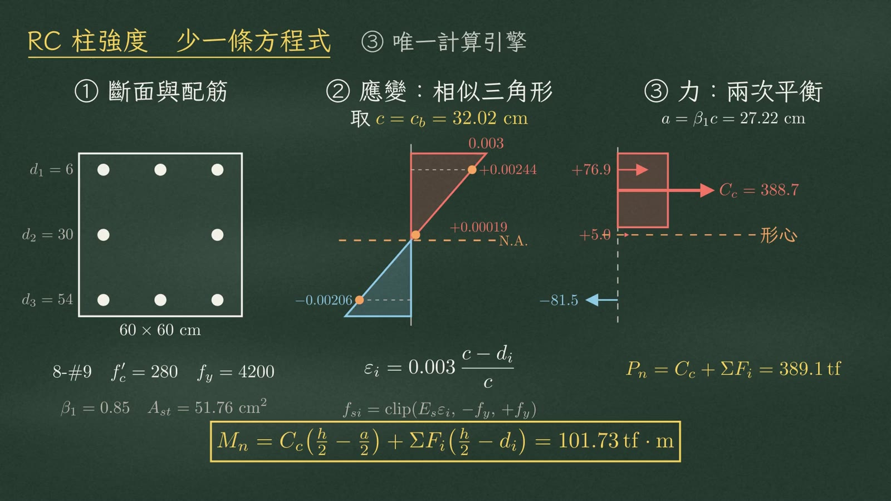
第一格：應變
用相似三角形，壓為正、拉為負；應力等於 \(E_s\) 乘應變，上下限截在 \(\pm f_y\)：
$$\varepsilon_i=0.003\,\frac{c-d_i}{c},\qquad f_{si}=\operatorname{clip}\!\left(E_s\varepsilon_i,\,-f_y,\,+f_y\right)$$| 排 | \(d_i\) (cm) | 應變 \(\varepsilon_i\) | 鋼筋力 \(F_i\) (tf) | 力臂 \(h/2-d_i\) (cm) |
|---|---|---|---|---|
| 上排 | 6 | \(\color{#c8553d}{+0.00244}\) | +76.9 | +24 |
| 中排 | 30 | \(\color{#c8553d}{+0.00019}\) | +5.0 | 0 |
| 下排 | 54 | \(\color{#3f7fa6}{-0.00206}\) | −81.5 | −24 |
黑板配色：紅＝受壓、藍＝受拉。
第二格：軸力平衡
\(a=\beta_1 c=27.22\ \text{cm}\)，混凝土壓力 \(C_c=388.7\ \text{tf}\)。三排鋼筋力分別是 +76.9、+5.0、−81.5。全部加起來：
$$P_n=C_c+\Sigma F_i=389.1\ \text{tf}$$第三格：對形心取矩
混凝土的力臂是 \(h/2-a/2\)，鋼筋的力臂是 \(h/2-d_i\)。加總得到：
$$M_n=C_c\left(\frac{h}{2}-\frac{a}{2}\right)+\Sigma F_i\left(\frac{h}{2}-d_i\right)=101.73\ \text{tf}\cdot\text{m}$$④ 兩個掉分細節
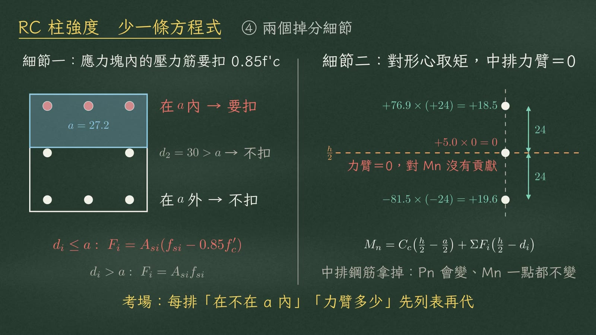
因為那塊面積已經算進混凝土壓力，不能算兩次。示範柱 \(a=27.2\)，上排在 \(a\) 內要扣；中排在 30 cm，剛好在 \(a\) 外，不扣。 $$d_i\le a:\ F_i=A_{si}\left(f_{si}-0.85f'_c\right)\qquad d_i>a:\ F_i=A_{si}f_{si}$$
它會影響 \(P_n\)，對 \(M_n\) 卻完全沒有貢獻。上排 +76.9 × (+24)，下排 −81.5 × (−24)，兩項都是正彎矩。
| 排 | 力 × 力臂 | 對 \(M_n\) 貢獻 (tf·m) |
|---|---|---|
| 上排 | \(+76.9\times(+24)\) | +18.5 |
| 中排 | \(+5.0\times 0\) | 0（力臂 = 0） |
| 下排 | \(-81.5\times(-24)\) | +19.6 |
⑤ P-M 互制圖
把引擎套在五個關鍵的 \(c\)，就得到這根柱的互制圖：
| 控制點 | \(P_n\) (tf) | \(M_n\) (tf·m) |
|---|---|---|
| ① 純軸壓 \(P_o\) | 1061.9 | 0.00 |
| ② \(\varepsilon_t=0\) | 764.5 | 64.67 |
| ③ 平衡點 | 389.1 | 101.73 |
| ④ 拉力控制界限 | 203.0 | 90.61 |
| ⑤ 純彎矩 | 0.0 | 54.62 |
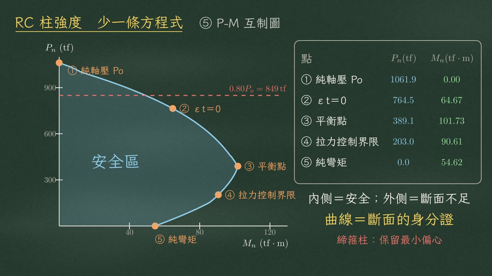
載重落在曲線內側就安全，落在外側就是斷面不足。曲線本身跟作用的軸力大小無關，它是斷面的身分證。另外，締箍柱的軸力上限要再乘 0.8，也就是 \(0.80P_o=849\ \text{tf}\)，保留最小偏心。
⑥ 為什麼鼓出來
互制圖為什麼會鼓出來？因為軸力在平衡點前後換了立場。
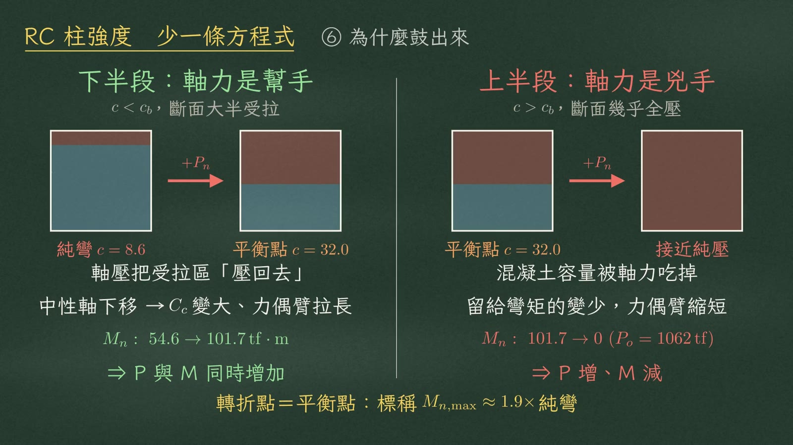
| 下半段：軸力是幫手 | 上半段：軸力是兇手 | |
|---|---|---|
| 範圍 | \(c<c_b\)，斷面大半受拉 | \(c>c_b\)，斷面幾乎全壓 |
| 加軸壓的效果 | 把受拉區「壓回去」：中性軸下移，壓力合力變大、力偶臂拉長 | 混凝土的容量被軸力吃掉，留給彎矩的就變少 |
| \(M_n\) 變化 | 54.6 → 101.7 tf·m（P 與 M 同時增加） | 101.7 → 0（P 增、M 減） |
⑦ 入口 A 直讀
接下來看 \(c\) 從哪裡來，一共三個入口。入口 A，\(c\) 直接讀出來。
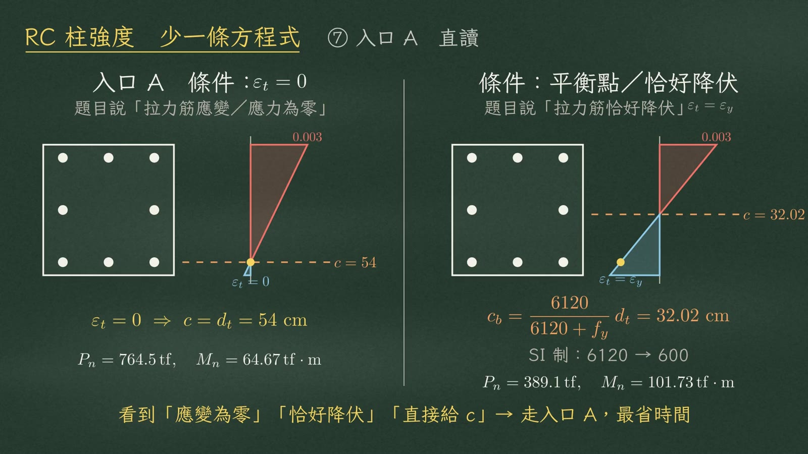
| 題目說 | \(c\) | 代進引擎 |
|---|---|---|
| 拉力筋應變為零、或應力為零 | \(c=d_t=54\ \text{cm}\) | \(P_n=764.5\ \text{tf}\)，\(M_n=64.67\ \text{tf}\cdot\text{m}\) |
| 平衡點、或拉力筋恰好降伏 | \(c_b=32.02\ \text{cm}\) | \(P_n=389.1\ \text{tf}\)，\(M_n=101.73\ \text{tf}\cdot\text{m}\) |
⑧ 入口 B 反解
入口 B，題目鎖住了 \(P\) 或偏心距 \(e\)。偏心距的意思是：一個偏心的 \(P\)，等於中心的 \(P\) 加上一個彎矩 \(P\cdot e\)，所以
$$e=\frac{M_n}{P_n}$$在互制圖上，固定 \(e\)，就是一條通過原點的射線。
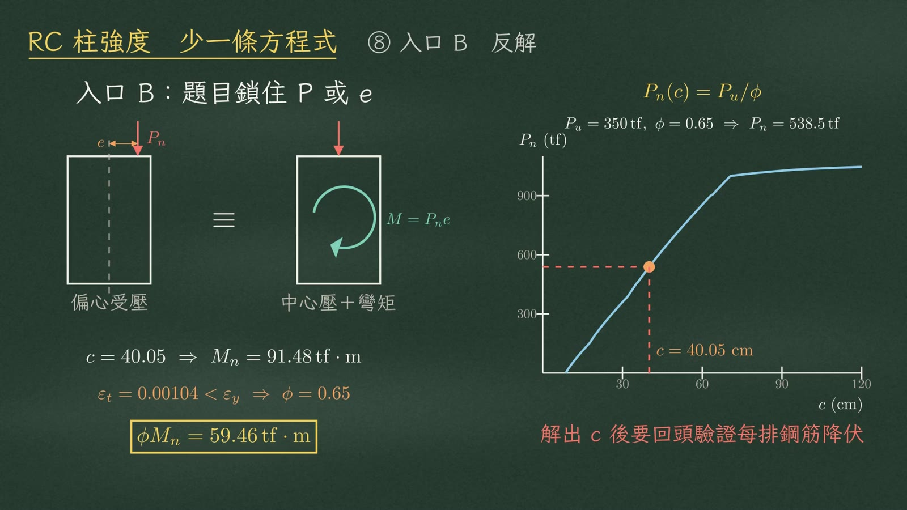
給了 \(P_u\)，就令 \(P_n=P_u/\phi\)，反解 \(c\)。例如 \(P_u=350\ \text{tf}\)，\(\phi\) 先假設 0.65，\(P_n=538.5\ \text{tf}\)。把 \(C_c\) 和各排鋼筋力寫成 \(c\) 的代數式，整理成二次方程式，解出 \(c=40.05\ \text{cm}\)。\(P_n\) 對 \(c\) 單調上升，根是唯一的。
代回引擎：
$$c=40.05\ \Rightarrow\ M_n=91.48\ \text{tf}\cdot\text{m},\qquad \varepsilon_t=0.00104<\varepsilon_y\ \Rightarrow\ \phi=0.65,\qquad \phi M_n=59.46\ \text{tf}\cdot\text{m}$$最外層拉應變只有 0.00104，小於降伏應變，屬於壓力控制，\(\phi\) 確實是 0.65。
⑨ 入口 C 四控制點
入口 C，要畫互制圖，就依序算四個控制點。
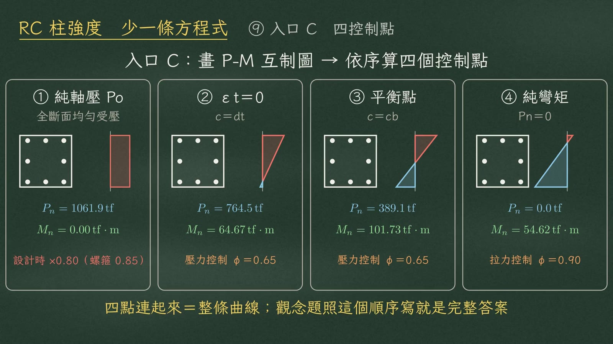
| 順序 | 條件 | \(P_n\) (tf) | \(M_n\) (tf·m) | 備註 |
|---|---|---|---|---|
| ① 純軸壓 \(P_o\) | 全斷面均勻受壓 | 1061.9 | 0.00 | 設計時再乘 0.80（螺箍柱 0.85） |
| ② \(\varepsilon_t=0\) | \(c=d_t\) | 764.5 | 64.67 | 壓力控制 \(\phi=0.65\) |
| ③ 平衡點 | \(c=c_b\) | 389.1 | 101.73 | 壓力控制 \(\phi=0.65\) |
| ④ 純彎矩 | \(P_n=0\) | 0.0 | 54.62 | 拉力控制 \(\phi=0.90\) |
⑩ φ 值
\(\phi\) 是破壞有沒有預警的價格標籤，看最外層拉力筋的應變 \(\varepsilon_t\)。
| \(\varepsilon_t\) | 控制模式 | \(\phi\) |
|---|---|---|
| \(\varepsilon_t\ge 0.005\) | 拉力控制 | 0.90 |
| \(\varepsilon_y<\varepsilon_t<0.005\) | 過渡區 | 線性內插 |
| \(\varepsilon_t\le\varepsilon_y=0.00206\) | 壓力控制 | 矩形締箍柱 0.65、螺箍柱 0.75 |
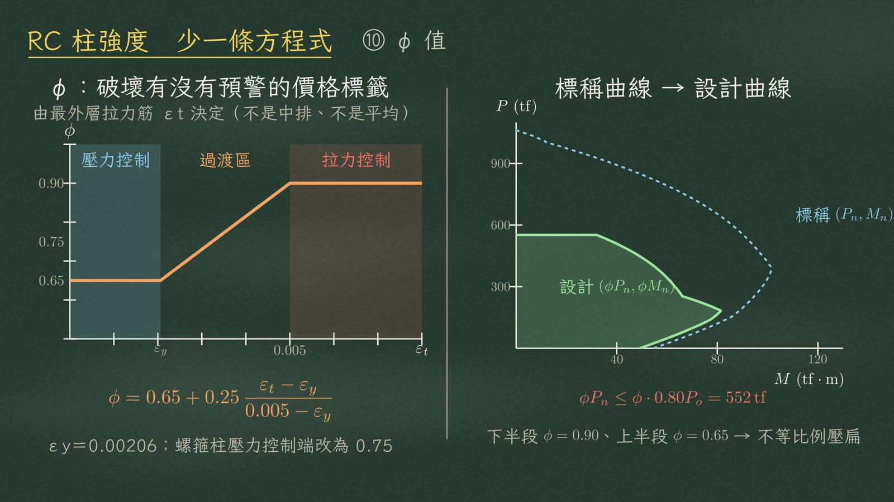
標稱曲線乘上 \(\phi\)，才是設計曲線。\(\phi\) 不是常數：下半段乘 0.9，上半段乘 0.65，曲線被不等比例壓扁，頂端再被 \(\phi\cdot0.80P_o=552\ \text{tf}\) 截平。
⑪ 最大設計彎矩
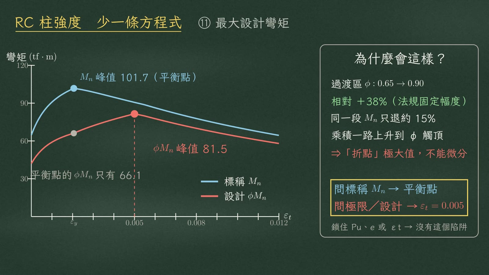
| 位置 | \(\color{#3f7fa6}{M_n}\) (tf·m) | \(\phi\) | \(\color{#c8553d}{\phi M_n}\) (tf·m) |
|---|---|---|---|
| 平衡點（\(\varepsilon_t=\varepsilon_y\)） | 101.7（峰值） | 0.65 | 66.1 |
| 拉力控制界限（\(\varepsilon_t=0.005\)） | 90.6 | 0.90 | 81.5（峰值） |
原因是過渡區裡 \(\phi\) 從 0.65 走到 0.9，漲了 38%，\(M_n\) 同一段只退大約 15%，乘積一路上升，直到 \(\phi\) 觸頂被截平，形成折點極大值，不能用微分求。
題目鎖住了 \(P_u\)、\(e\) 或 \(\varepsilon_t\)，就沒有這個陷阱。
⑫ 細長效應
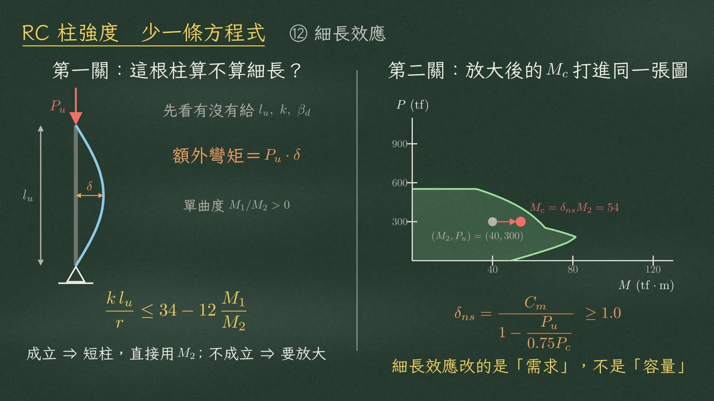
第一關：這根柱算不算細長？
考場第一步，先看題目有沒有給 \(l_u\)、\(k\) 和 \(\beta_d\)。有給就檢查細長比：
$$\frac{k\,l_u}{r}\le 34-12\,\frac{M_1}{M_2}\qquad(\text{單曲度時 }M_1/M_2\text{ 取正})$$成立就是短柱，直接用 \(M_2\)；不成立，就要放大彎矩（額外彎矩 \(=P_u\cdot\delta\)）。
第二關：放大後打進同一張圖
$$\delta_{ns}=\frac{C_m}{1-\dfrac{P_u}{0.75P_c}}\ge 1.0,\qquad M_c=\delta_{ns}M_2$$例如 \((M_2,P_u)=(40,300)\)，\(M_2=40\) 放大成 \(M_c=54\)，打進同一張互制圖。
⑬ 兩把檢核尺
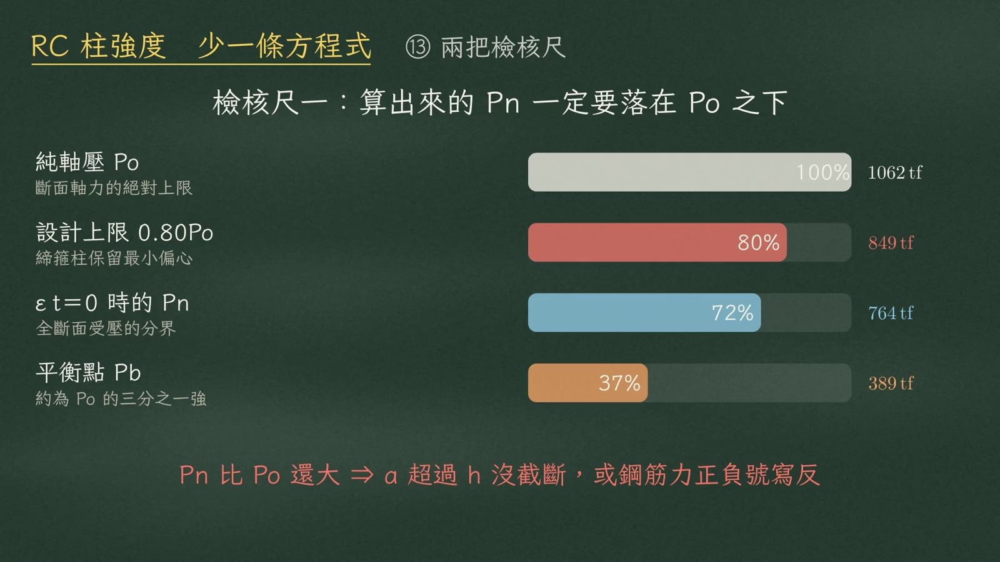
第一把，算出來的 \(P_n\) 一定要落在 \(P_o\) 之下。示範柱平衡點大約三成七 \(P_o\)，拉力筋應變為零大約七成二，設計上限八成。
| 項目 | \(P_n\) (tf) | 占 \(P_o\) |
|---|---|---|
| 純軸壓 \(P_o\) | 1062 | 100% |
| 設計上限 \(0.80P_o\) | 849 | 80% |
| \(\varepsilon_t=0\) 時的 \(P_n\) | 764 | 72% |
| 平衡點 \(P_b\) | 389 | 37% |
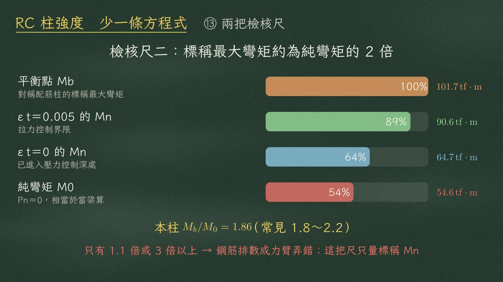
第二把，標稱最大彎矩大約是純彎矩的兩倍，本柱 \(M_b/M_0=1.86\)，常見範圍 1.8～2.2。
| 項目 | \(M_n\) (tf·m) | 占 \(M_b\) |
|---|---|---|
| 平衡點 \(M_b\) | 101.7 | 100% |
| \(\varepsilon_t=0.005\) 的 \(M_n\) | 90.6 | 89% |
| \(\varepsilon_t=0\) 的 \(M_n\) | 64.7 | 64% |
| 純彎矩 \(M_0\) | 54.6 | 54% |
總結
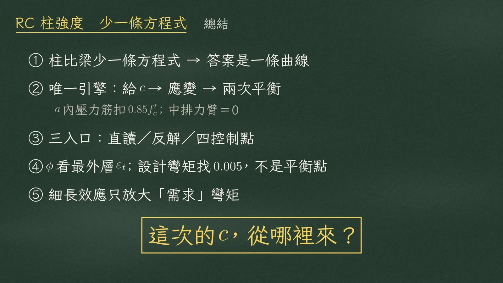
| # | 重點 |
|---|---|
| ① | 柱比梁少一條方程式，所以答案是一條曲線。 |
| ② | 唯一的引擎：給 \(c\)，算應變，做兩次平衡；\(a\) 內的壓力筋扣 \(0.85f'_c\)，中排鋼筋力臂為零。 |
| ③ | 三個入口：直讀、反解、四控制點。 |
| ④ | \(\phi\) 看最外層的 \(\varepsilon_t\)；問設計彎矩找 0.005，不是平衡點。 |
| ⑤ | 細長效應只放大需求彎矩。 |